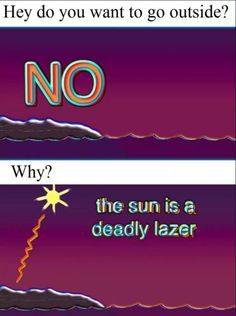

HOME TOP TEN QUIZ 1 BILL WURTZ HEALTHY
Bill Wurtz (stylized as bill wurtz) is an online video creator and multi-instrumentalist based in New York City. Wurtz is known for his distinctive style of song and video, including dry delivery and singing, paired with colorful surrealist, psychedelic, and non-sequitur graphics. Wurtz posts jingles and songs on his website and on his YouTube channel and has been actively making music since 2005. Wurtz first gained a following on Vine, where he began by taking short videos he had previously only published to his website and Twitter account and repackaging them to fit Vine's 6-second restrictions. Before transitioning fully to YouTube, Wurtz was uploading a video to Vine nearly every day.
Despite some interest on Vine, Wurtz achieved Internet notoriety with "history of japan", a 9-minute YouTube video that outlines Japan's history from 40,000 B.C.E to 1991 C.E. It fully showcases Wurtz's quirky visual and comedic style through a mixture of fast-paced narration and animation. It went viral after its release on February 2, 2016, receiving 1.7 million views in two days and more than quadrupling Wurtz's subscriber count in 1 week. As of January 31, 2019, it has over 45 million views. Wurtz is best known for "history of the entire world, i guess", a 19-minute follow-up to "history of japan" released on May 10, 2017. Expanding greatly on the subject matter — the video took over 11 months to produce, including almost 3 months of research— it briefly covers the topics of natural history and human civilization spanning from the Big Bang to the year 2028. It went viral after its release, receiving 1.1 million views in its first 8 hours, 3.2 million views on its first day, and 13 million views in its first week. It was the top video on the YouTube trending page on the day of its release, and would later be named No. 8 on YouTube's list of the top 10 trending videos of 2017. As of January 31, 2019, it has over 60 million views.
Wurtz employs a rich and complicated musical style which blends progressive jazz with pop and easy listening. He frequently makes use of unusual time signatures and chord progressions, often finishing his songs on dissonant or atonal notes and chords. Overall, his music is of an uplifting or whimsical nature which is often paired comedically with dire circumstances or sobering undertones. Lyrically, Wurtz has an aphoristic, economical, and absurdist style, resembling his website's "notebook". Visually, his videos are lively and somewhat psychedelic and often involve cheap clipart or stock photos, operating system–default fonts, and hand-drawn graphics which are digitally manipulated, layered, and animated in time with the music.
Wurtz often follows similar patterns in his videos such as layering copies of shapes and text together with contrasting or clashing colors, including screenshots of built-in MacOS applications such as TextEdit, and showing himself to play air drums but overlaying images where drumheads would be. He has stated that this basic style arose out of necessity to publish content regularly and evolved naturally over time, particularly after appearing on Vine. He uses Final Cut Express 4 to create his videos. During the Vidcon 2018 panel "Finding a niche and making it work for you", Wurtz answered a question about why his style is so different from other YouTube musicians. He explained that he doesn't watch any other creators on the platform. Instead, he simply does what he himself thinks is normal: "My secret is just live under a rock, and stay there."
Since May 2014, Wurtz has published full-length music videos, following the same format of his shorter videos, and made them available on his YouTube channel. On January 16, 2018 he releassed "La de da de da de da de day oh" which currently has 8.2 million views, peaked at #1 on the YouTube trending page upon being released. On April 11, 2016, Wurtz won the Shorty Award for "Best in Weird" at the 8th Shorty Awards for his six-second videos on Vine ("history of japan" was released after the voting and so was not included in the award consideration). His acceptance speech for the award was notably curt, as he walked up to the mic, said "Thank you", and walked off the stage right after. He has stated in a video on his website that this was entirely intentional, having been directly inspired by an acceptance speech given by Andre 3000.